01
Tray Line
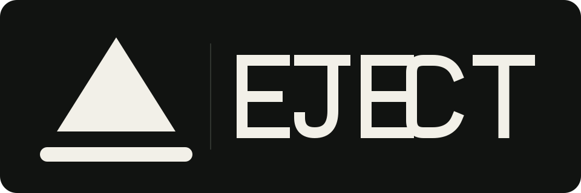
イジェクト記号の下線を物理トレイへ延長。最も直接的で、小サイズにも強い案。
The clearest expression of one physical action.
One action. Physical result.
Logo study / 2026-07-18
GitHub READMEに載せるためのロゴ比較です。製品の単一の物理動作、デッドパンな語り口、監視しない設計を、装飾を増やさずに表現します。
Working concepts, not an adopted visual identity. Each lockup is a self-contained SVG and remains legible in GitHub light and dark themes.

イジェクト記号の下線を物理トレイへ延長。最も直接的で、小サイズにも強い案。
The clearest expression of one physical action.
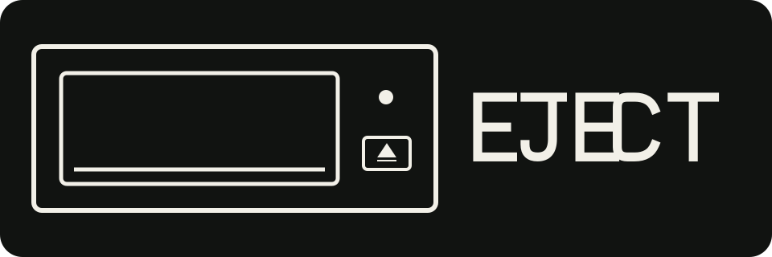
光学ドライブの前面そのものを、トレイ、ボタン、ランプだけに還元。
Immediate context, with more detail at small sizes.
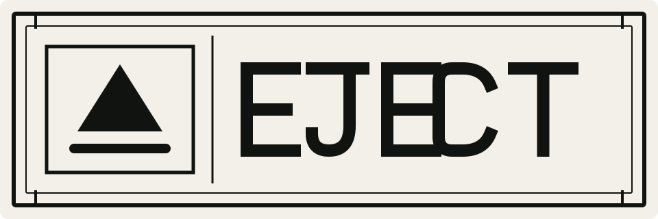
研究設備や機器管理ラベルのような、事務的で意図的に乾いた構成。
The strongest expression of the deadpan voice.
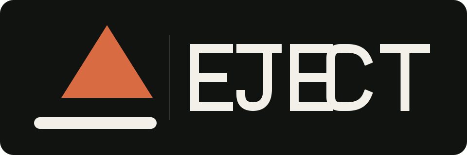
三角形をトレイからずらし、簡潔な一度の動きを示す。
The orange accent is exploratory; the mark also works in one color.
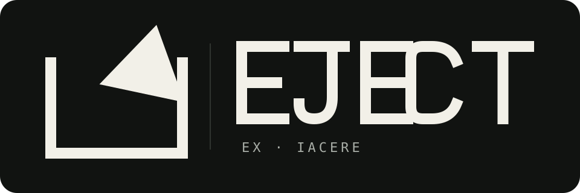
「外へ」＋「投げる」というラテン語の語根を、境界を斜めに越える形へ。
An etymological story without replacing the EJECT product name.
Five further reductions of ex — out — and iacere — to throw. Each uses a different visual rule instead of repeating the eject triangle.
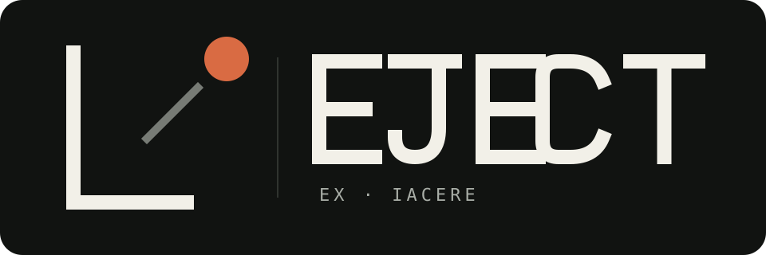
物体を点まで、境界をL字まで還元。「外へ投げる」だけを残した最小形。
The root meaning reduced to a boundary, trajectory, and point.
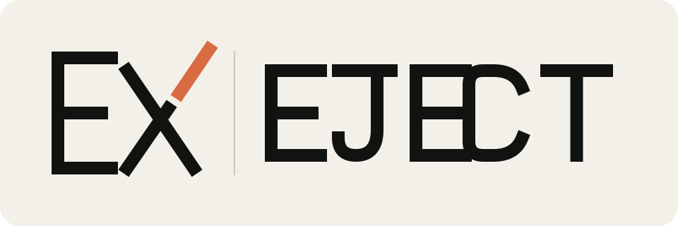
語根EXを直接モノグラム化し、Xの一画だけを外へ飛ばす。
The most explicit connection to the Latin prefix.
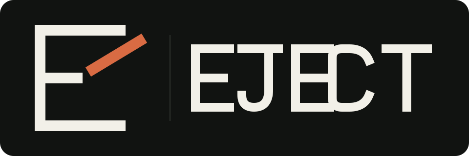
Eの中棒が文字から離れ、そのまま斜め上へ投げ出される。
Readable as an action before its etymological story is known.
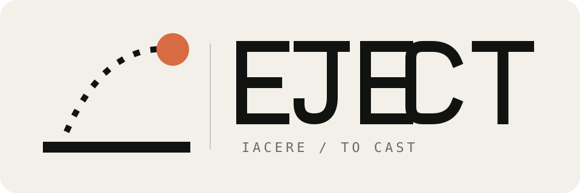
投げる動作を、物理的な基準線と一つの放物線に抽象化。
A literal cast, without using an arrow or standard eject symbol.
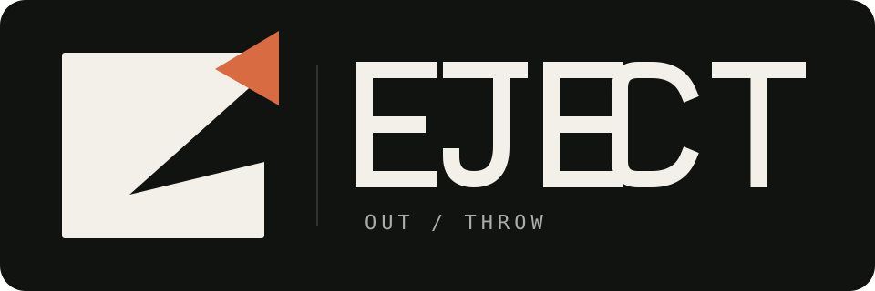
塊から切り取られた形が外側に再出現する、負の空間による排出。
The most abstract and ownable of the etymology studies.
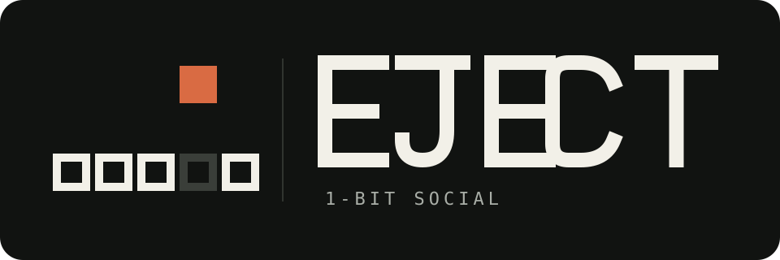
ビット列から一つのビットだけがスロットを離れ、上へ排出される。
One action, one physical result, in the smallest unit of data.
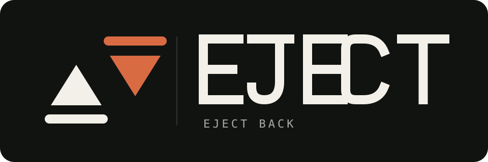
向かい合う二つのイジェクト記号。一方がejectし、もう一方がejectし返す。
The reciprocal core experience, expressed only by inverting the mark.
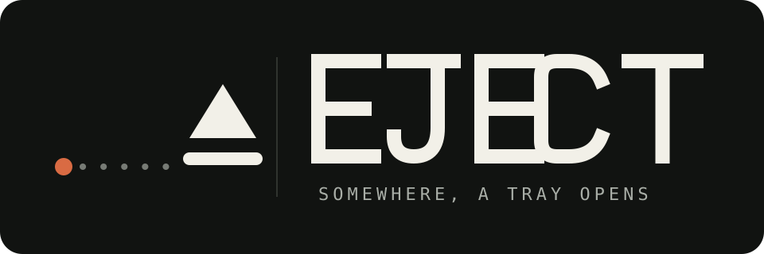
遠くの一点から点線の信号が距離を渡り、トレイが開く。
A literal drawing of "Somewhere, a tray opens."
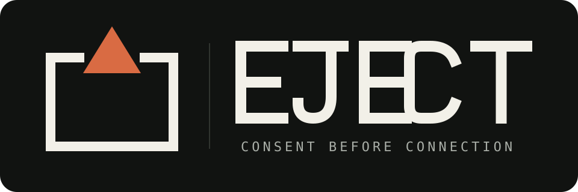
意図的に開けられた境界の隙間からだけ、形は外に出られる。
A diagram of consent before connection.
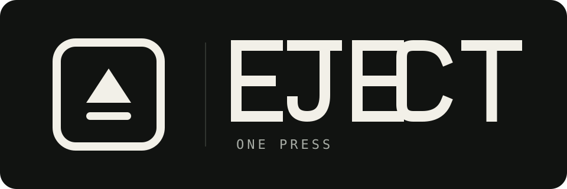
イジェクト記号を載せた一つのキー。友達が行う唯一の操作。
The single action, drawn from the sender's side.
Social, one bit
Five studies on the third axis: EJECT as a one-bit physical social network — people, consent, and remote presence, rather than hardware or Latin.